무선설비산업기사 (2021-10-02 기출문제)
1과목: 디지털 전자회로
1. 다음 중 맥동 전압(Ripple Voltage)에 대한 설명으로 옳은 것은?
- 맥동이 클수록 필터 동작이 뛰어나다.
- 맥동률은 직류 출력 전압에 대한 맥동 전압의 비율이다.
- 전파 정류기는 반파 정류기보다 맥동이 커서 많이 사용된다.
- 맥동률이 높을수록 더 좋은 필터이며 커패시터 값이 커질수록 맥동률은 커진다.
(정답률: 70%)

2. 반파정류기의 직류출력전압이 20[V]일 때 맥동전압의 rms 값은?
- 24.2[V]
- 20.0[V]
- 9.6[V]
- 7.7[V]
(정답률: 64%)
3. 다음 중 정전압 안정화 회로에서 안정화 전원용으로 사용되는 소자는?
- 콘덴서
- 코일
- 제너다이오드
- FET
(정답률: 74%)
4. PNP와 NPN 트랜지스터를 조합하여 이루어진 push-Pull 증폭회로를 무엇이라 하는가?
- 컴플리멘터리 SEPP 회로
- 위상반전회로
- OTL
- OCL
(정답률: 68%)
5. 다음 그림은 베이스 바이어스 회로이다. 동작점에서 VCE 전압은? (단, 베어스에미터 전압 VBE = 0.7[V] 이다.)
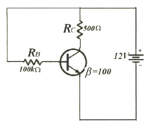
- 2.25[V]
- 6.35[V]
- 11.3[V]
- 12.0[V]
(정답률: 63%)
6. 다음 회로는 FET를 이용한 Voltage-series 궤환 증폭회로이다. 궤환이 없을 때 전압이득 AV는? (단, FET의 드레인 저항은 rd, 전달 컨덕턴스 gm, 증폭률 μ = gmrd)
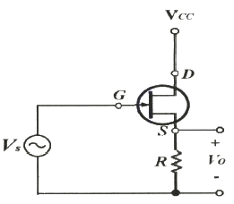
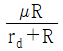
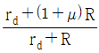
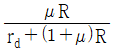
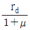
(정답률: 61%)
7. 차동증폭기에서 두 입력 전압이 각각 V1 = 50[μV], V2 = 50[μV]일 때 출력전압은 얼마인가? (단, Ad는 차신호 이득이며, CMRR = 100 이다.)
- ∞
- 50Ad[μV]
- 100Ad[μV]
- 200Ad[μV]
(정답률: 64%)
8. 다음 중 연산 증폭회로의 응용인 비교기에 대한 설명으로 옳지 않은 것은?
- 두 개의 입력 전압과 하나의 출력 전압을 갖는다.
- 비반전전압이 반전전압보다 크면 높은 전압을 출력한다.
- 비반전전압이 반전전압보다 작으면 낮은 전압을 출력한다.
- 가성접지 때문에 커패시터 전류는 귀환저항을 통해 흐르고 전압을 발생시킨다.
(정답률: 65%)
9. 다음 중 푸시풀 전력증폭기에서 출력신호 파형의 찌그러짐이 작아지는 주된 이유는 무엇인가?
- 기수차 고조파 성분이 상쇄되기 때문이다.
- 우수차 고조파 성분이 상쇄되기 때문이다.
- 기수차 및 우수차 고조파 성분이 모두 상쇄되기 때문이다.
- 직류성분이 없어지기 때문이다.
(정답률: 64%)
10. 완충증폭기로 A급 증폭기를 많이 사용하는 이유는 무엇인가?
- 능률이 좋다.
- 조정이 쉽다.
- 기생진동이 없다.
- 안정된 증폭을 한다.
(정답률: 72%)
11. 15[kHz]까지 전송할 수 있는 PCM시스템에서 요구되는 최소 표본화 주파수는?
- 10[kHz]
- 20[kHz]
- 30[kHz]
- 40[kHz]
(정답률: 78%)
12. 다음 중 DSB-LC(DSB-TC) 변조 후에 발생되는 (피)변조 신호를 구성하는 성분이 아닌 것은?
- 반송파
- USB
- LSB
- FSB
(정답률: 64%)
13. 다음 중 아날로그 진폭 변조 방식의 종류가 아닌 것은?
- DSB-LC(DSB-TC)
- DSB-SC
- FM
- SSB
(정답률: 72%)
14. 진폭변조에서 신호파 xs(t) = 4cos2πfst, 반송파 xc(t) = 5cos2πfct 로 주어질 때 피변조파 x(t)를 나타낸 것은?
- x(t) = 4(1+0.8sin2πfst)cos2πfct
- x(t) = 4(1+0.8cos2πfst)cos2πfct
- x(t) = 5(1+0.8sin2πfst)cos2πfct
- x(t) = 5(1+0.8cos2πfst)cos2πfct
(정답률: 61%)
15. 멀티바이브레이터에서 비안정, 단안정, 쌍안정의 구별은 무엇으로 결정되는가?
- 결합 회로의 구성에 따라
- 전원 전압의 크기에 따라
- 바이어스 전압의 크기에 따라
- 인덕터의 수에 따라
(정답률: 69%)
16. 다음 중 멀티바이브레이터에 대한 설명으로 잘못된 것은?
- 정궤환이 이루어지는 회로이다.
- 출력 파형은 고차의 고조파를 포함한다.
- 시정수는 입력 파형의 주기를 결정한다.
- 스위치 회로의 구형파 발생, 계수회로로 사용된다.
(정답률: 57%)
17. 다음 그림과 같은 Exclusive-OR 게이트를 이용하여 출력값이 'Y=B'인 Buffer로 활용하기 위한 입력결선 방법으로 가장 옳은 것은?
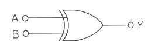
- 입력 A는 Open 시킨다.
- 입력 A를 +5[V]로 고정한다.
- 입력 A를 0[V]로 고정한다.
- 입력 A를 출력 Y와 연결한다.
(정답률: 66%)
18. 다음 회로의 기능과 같은 논리 게이트는 무엇인가?
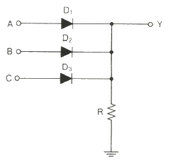
- AND
- OR
- EX-OR
- NAND
(정답률: 69%)
19. 두 입력을 비교하여 A＞B 이면 출력이 1이고, A≤B 이면 출력이 0 이 되는 논리회로를 설계하고자 한다. 이 조건을 만족하는 논리식은?
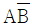
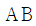
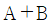
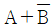
(정답률: 72%)
20. 2진 비교기의 입력이 X = 1, Y = 0 일 때 비교기 출력 X＞Y 와 X＜Y의 값을 바르게 나타낸 것은?
- 0, 0
- 0, 1
- 1, 1
- 1, 0
(정답률: 63%)
2과목: 무선통신 기기
21. AM 송신기의 주파수체배기에 사용되는 증폭기는 어느 증폭 방식이 많이 사용되는가?
- A급
- AB급
- B급
- C급
(정답률: 67%)
22. 무선통신에서 FM 방식이 AM 방식에 비해 신호대 잡음비기 좋은 이유로 가장 적합한 것은?
- 리미터(Liniter)를 사용하므로
- 클라리파이어(Clarifier)를 사용하므로
- AGC 회로를 사용하므로
- 깊은 변조를 할 수 있으므로
(정답률: 64%)
23. 다음 중 초기 모뎀에 적용된 기술로써 저속 디지털 전송에 사용했고 채널의 상태에 민감한 기술은?
- ASK
- FSK
- PSK
- QAM
(정답률: 69%)
24. 반송 신호의 순간 주파수가 PCM코드에 응답하여 두 개의 값들 사이에서 전환되는 디지털 변조 시스템은?
- ASK
- PSK
- FSK
- MSK
(정답률: 53%)
25. 전송선로의 대역폭이 40[kHz], S/N 비가 15 일 때 전송할 수 있는 채널용량은?
- 46.8 × 103
- 4 × 104
- 16 × 103
- 16 × 104
(정답률: 56%)
26. 다음 중 레이다의 방위 분해능을 개선하는 방법으로 틀린 것은?
- 가능한 파장이 짧은 전파를 이용한다.
- 스캐너의 길이는 가능한 길게 한다.
- 주파수가 높은 전파를 이용한다.
- 레이다 마스트의 높이를 높인다.
(정답률: 56%)
27. 다음 중 GMDSS의 송·수신기에 대한 설명으로 틀린 것은?
- 위성계 통신 장비로 INMARSET가 사용된다.
- 위성계 통신 장비로 RCC(Rescue Coordination Center)가 사용된다.
- 지상계 통신으로 원거리 통신에는 HF대를 이용한다.
- 지상계 통신으로 중거리 통신장비는 MHF대 DSC와 NAVTEX가 사용된다.
(정답률: 59%)
28. 위성통신시스템에서 통신영역을 편파 또는 여러 개의 협소 빔으로 공간 분할하는 다원접속기술은?
- SDMA
- CDMA
- TDMA
- FDMA
(정답률: 65%)
29. 인털셋 표준 지구국은 현재 표준 A 에 표준 Z까지 크게 8가지로 분류되고 있다. 이러한 표준국 구분의 조건에 영향을 미치는 것이 아닌 것은?
- G/T
- 사용주파수
- CNR
- 안테나의 크기
(정답률: 52%)
30. 40[kHz]의 대역폭을 갖는 신호전송 시 PCM(Pulse Code Modulation)시스템에서 요구되는 최소 표본화 주파수는?
- 30[kHz]
- 40[kHz]
- 60[kHz]
- 80[kHz]
(정답률: 71%)
31. TPEG(Transport Protocol Expert Group) 기술에서 단말기로 정보를 전송하는데 사용되는 매체는?
- DMB 주파수
- WIFI 전송
- 음성 주파수
- USN(Ubiquitous Sensor Network)
(정답률: 63%)
32. 재난안전통신망의 단절없는 통신환경을 지원하기 위한 방안으로 거리가 먼 것은?
- 전국 단일의 통화권 확보
- 다양한 유형의 단말기 제공
- 신속한 통신서비스 제공환경 구축
- 업체의 기술독점력 확보
(정답률: 73%)
33. 재난안전통신망에서 동일한 주파수를 사용하는 다른 통신망 간의 간섭을 해소하는데 적용하는 기술은?
- RAN Sharing
- MIMO
- Freqency Diversity
- Beam Forming
(정답률: 55%)
34. 다음 중 DC-DC 컨버터중의 하나인 스위칭 레귤레이터의 장점에 대한 설명으로 틀린 것은?
- 전력효율이 높다.
- 일정한 출력 전압을 얻을 수 있다.
- 입력보다 출력이 높은 전압을 얻을 수 있다.
- 잡음이 적다.
(정답률: 57%)
35. 태양전지에서 만들어진 직류전기를 교류전기로 만들어주는 것은?
- 인버터
- 컨버터
- 광센서
- 콘트롤러
(정답률: 70%)
36. 태양발전설비에서 부조일수 3일, 부하의 수요전력량 90[kWh], 축전지 계수 0.425 일 때, 축전지 용량은 약 얼마인가?
- 114[kWh]
- 153[kWh]
- 635[kWh]
- 847[kWh]
(정답률: 49%)
37. 다음 중 FM 송신기의 전력 측정 방법으로 적합하지 않은 것은?
- 열량계에 의한 방법
- C-M형 전력계에 의한 방법
- 수부하계에 의한 방법
- 볼로미터 브리지에 의한 방법
(정답률: 65%)
38. CDMA 및 WCDMA 휴대단말기를 포함한 대부분의 송수신기에서 사용되는 것으로서 수신신호의 레벨변화와 온도 등에 의한 출력레벨의 변동이 없도록 제어하는 장치는 무엇인가?
- AVR
- AGC
- LNA
- PLL
(정답률: 58%)
39. 광대역 FM송신기로 송신하는 신호의 최대 주파수 편이가 30[kHz]이고, 변조 주파수가 5[kHz]일 때, 이 FM의 대역폭은?
- 10[kHz]
- 35[kHz]
- 70[kHz]
- 100[kHz]
(정답률: 64%)
40. 다음 그림과 같이 결선하여 안테나의 실효저항을 측정하고자 한다. 회로에서 신호발생기(SG)의 주파수를 안테나에 공진시키고 스위치 S를 닫았을 때 A의 지시가 6[A], 스위치 S를 열었을 때 4[A]이면 안테나의 실효저항(Re)은 얼마인가? (단, Rs는 10[Ω] 이며, A의 내부저항은 무시한다.)
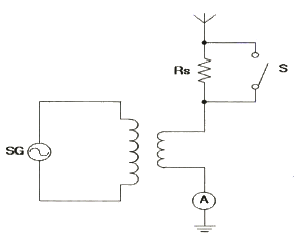
- 20[Ω]
- 30[Ω]
- 40[Ω]
- 50[Ω]
(정답률: 60%)
3과목: 안테나 개론
41. 맥스웰의 제1방정식 “△⦁D = ρ”에서 발산에 대한 정의로서 바르지 못한 것은?
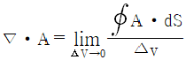
- 벡터장의 원천을 파악하는데 이용된다.
- 발산 값이 (+)이면 벡터 장이 흘러 나오는 원천이다.
- 발산 값으로 (0)은 없다.
(정답률: 70%)
42. 다음 중 지상파에 대한 설명으로 틀린 것은?
- 송수신점의 안테나 높이와 직접파의 가시거리는 직접적인 관계가 없다.
- 직접파는 송신점에서 수신점에 직접 도달하는 전파이다.
- 지표파는 도전성인 지구 표면을 따라서 전파하는 전파이다.
- 회절파는 대지의 융기부나 지상에 있는 전파 장애물을 넘어서 수신점에 도달하는 전파이다.
(정답률: 70%)
43. 송수신점간의 거리가 정해졌을 때 전리층 반사파를 이용하여 통신할 수 있는 최적의 사용 주파수를 무엇이라고 하는가?
- LUF
- MUF
- FOT
- VHF
(정답률: 62%)
44. 다음 중 VHF(Very High Frequency)와 UHF(Ultra High Frequency) 대역의 주파수 범위는?
- VHF : 300~3,000[MHz], UHF : 30~300[MHz]
- VHF : 3~30[MHz], UHF : 30~300[MHz]
- VHF : 30~300[MHz], UHF : 300~3,000[MHz]
- VHF : 30~300[MHz], UHF : 3~30[MHz]
(정답률: 72%)
45. 해양경찰 무선국에서 주간에 20[MHz]로 통신하였으나 야간에 동일 주파수로는 감도가 떨어져 사용주파수를 전환해서 교신하였다고 할 때 적정한 주파수는 어느 것인가?
- 16[MHz]
- 24[MHz]
- 27[MHz]
- 28[MHz]
(정답률: 61%)
46. 다음 중 전리층 반사를 사용하는 주파수대에서 최고 사용주파수(MUF)를 구하는 목적으로 맞는 것은?
- 전리층 반사파를 사용하여 통신하기 적합한 주파수를 구하는데 사용한다.
- 전리층의 밀도를 구하는데 사용한다.
- 전리층 반사파를 사용하는 경우의 전계강도를 구하는데 사용한다.
- 전리층 반사파가 도달하는 최고의 거리를 구하는데 사용한다.
(정답률: 59%)
47. 전자파의 회절현상에 대한 설명으로 적합하지 않은 것은?
- 전파의 전파통로 상에 산이나 건물 등의 장애물이 있을 때 가시거리 외 음영부분까지 전자파의 일부가 휘어져 도달하는 현상을 말한다.
- 주파수가 높을수록 회절현상은 심하다.
- 프레넬 존(Fresnel zone)의 원인이 된다.
- 호이겐스 원리에 의하여 설명된다.
(정답률: 66%)
48. 급전선의 무왜곡 조건식을 옳게 표시한 것은? (단, C : 커패시턴스, G : 컨덕턴스, R : 저항, L : 인덕턴스)
- C/G = R/L
- G/C = R/L
- 2C/G = R/L
- C/2G = R/L
(정답률: 62%)
49. 다음 중 비동조 급전 방식에 대한 설명으로 바르지 못한 것은?(오류 신고가 접수된 문제입니다. 반드시 정답과 해설을 확인하시기 바랍니다.)
- 급전전상에 반사파가 생기지 않도록 하기 위한 정합장치가 필요하다.
- 급전선의 길이와 사용 파장은 일정 비례관계를 갖지 않는다.
- 피더에는 정재파가 편승하지 않는다.
- 평형형 급전선만 사용할 수 있다.
(정답률: 55%)
50. 다음 중 안테나의 도파관에 금속봉(Stub)을 삽입하는 이유로서 바르게 설명된 것은?
- 리액턴스 성분을 제거한다.
- 반사파를 만들기 위함이다.
- 안테나 길이를 단축한다.
- 고주파 전압의 파복을 낮춘다.
(정답률: 74%)
51. 다음 분포정수회로에 의한 정합 방법 중 동축 급전선과 안테나의 정합에 적용할 수 없는 것은?
- Taper에 의한 정합
- Stub 정합
- Omega 정합
- Gamma 정합
(정답률: 64%)
52. 미소 다이폴 안테나에서 생성되는 전파 중에서 원거리(0.16 λ이상)에서 주가되는 성분은?
- 정전계
- 정자계
- 복사계
- 유도계
(정답률: 64%)
53. Friis의 전달공식에 의한 무선구간 경로손실(Path Loss)은 안테나에서 전송 전력과 수신 전력 사이에서의 신호 감쇠를 의미하고, 이는 자유공간 하에서 PL(dB) = 20log10(f, MHz) + 20log10(D, km) + 32.4 로서 데시벨 단위로 표현된다. 사용주파수가 1,000MHz이고, 전송거리가 10km 일 때 경로손실(dB)은 얼마인가?
- 92.4
- 102.4
- 112.4
- 122.4
(정답률: 49%)
54. 안테나의 반사계수가 0.6일 때, 정재파비(VSWR)는?
- 2
- 3
- 4
- 5
(정답률: 65%)
55. 다음 중 루프 안테나에 대한 설명으로 틀린 것은?
- 실효길이는 권수(감이수)에 비례하고, 파장에 반비례한다.
- 전파도래 방향과 루프면이 일치할 때 최대 감도를 갖는다.
- 중장파용 안테나이다.
- 루프 지름과 파장 사이에 관계에 따라서 지향성 특성이 변한다.
(정답률: 50%)
56. 다음 중 수평 편파 성분의 전파를 수신하지 못하는 안테나는?
- Wave 안테나
- Loop 안테나
- Sleeve 안테나
- Adcock 안테나
(정답률: 56%)
57. 다음 중 폴디드(Folded) 다이폴 안테나에 대한 설명으로 틀린 것은?
- 반파장 다이폴의 변형으로 급전점의 임피던스를 높게 할 수 있다.
- 300[Ω] 급전선과 정합하기 위해서는 임피던스 변환기가 필요하다.
- 안테나 이득은 반파장 다이폴과 같다.
- 주로 TV 또는 초단파용 안테나로 사용된다.
(정답률: 57%)
58. 다음 중 마이크로스트립 안테나에 대한 설명으로 옳지 않은 것은?
- 이득이 크다.
- 선형 및 원형 편파가 가능하다.
- 대역폭이 작다.
- 제작 비용이 적게든다.
(정답률: 50%)
59. 전자파인체보호기준 상의 전·자기장강도 측정값과 기준값 비의 제곱 또는 전력밀도 측정값과 기준값의 비를 무엇이라 하는가?
- 노출지수
- 보호지수
- 감쇠지수
- 비교지수
(정답률: 52%)
60. 전자파강도 측정기의 최대 입력이 10[dBm]인데, 실제 안테나에 유기된 전력이 100[mW] 라면 측정기 입력단에 최소 몇 [dB]의 감쇄기를 삽입하여야 하는가? (단, 1[mW]가 0[dBm]이며, 임피던스는 잘 매칭되어 있고, 케이블 등 기타 손실은 무시한다.)
- 0[dB]
- 1[dB]
- 10[dB]
- 20[dB]
(정답률: 57%)
4과목: 전자계산기 일반 및 무선설비기준
61. 산술 및 논리 연산의 결과를 일시적으로 기억하는 레지스터는?
- Instruction 레지스터
- Status Flag 레지스터
- Accumulator 레지스터
- Address 레지스터
(정답률: 64%)
62. 다음 중 RISC(Reduced Instruction Set Computer)와 CISC(Complex Instruction Set Computer)에 대한 설명으로 옳은 것은?
- RISC는 CISC보다 더 많은 레지스터를 가진다.
- CISC는 명령어의 길이가 고정적이다.
- CISC는 단일 사이클로 대부분의 명령어를 실행한다.
- 대표적인 RISC 칩은 인텔사의 x86 시리즈이다.
(정답률: 55%)
63. 사설 IP를 사용하여 인터넷에 접속할 때 공인 IP주소와 상호변환하는 역할을 하는 것은?
- NAT
- ARP
- DHCP
- RIP
(정답률: 52%)
64. IP주소가 128.110.121.32/24 이라면 네트워크 주소는 무엇인가?
- 128.0.0.0
- 128.110.0.0
- 128.110.121.0
- 128.110.121.32
(정답률: 63%)
65. 오픈 네트워크에서 인증과 통신의 암호화를 시행하여 보안성을 확보하는 알고리즘으로 신뢰할 수 있는 제3의 기관인 키분배센터에서 클라이언트의 패스워드를 기초로 생성한 티켓을 발급하고 클라이언트는 이를 접근할 서버에서 사용해 패스워드의 누출위험을 줄여 더 높은 상호 인증을 구현하는 프로토콜은 무엇인가?
- IPSEC
- SSLTLS
- SET
- 커버로스(kerberos)
(정답률: 51%)
66. 다음 문장을 비밀키를 이용하여 암호문을 만들고자 한다. 괄호안에 들어갈 암호문으로 적합한 것은 무엇인가?
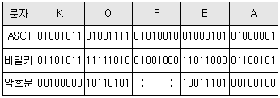
- 01010010
- 01001000
- 10101101
- 00011010
(정답률: 60%)
67. 시스템간에 데이터를 옮기기 위한 데이터 전환 계획에 대한 설명으로 틀린 것은?
- 선 전환, 본 전환, 후 전환으로 분리하여 계획을 수립한다.
- 본 전환에 대한 세부절차는 시간대별로 상세하게 작성한다.
- 일자별 거래내역, 근태 내역 등 대량의 데이터 테이블은 사후에 전환한다.
- 작업별로 전환 시간, 전환 담당자, 관리자 등을 지정한 전환 시나리오를 작성한다.
(정답률: 58%)
68. 오류 관리 목록에서 오류가 보고되었지만 아직 분석되지 않은 상태를 나타내는 용어는?
- Open
- Fixed
- Closed
- Deferred
(정답률: 55%)
69. 원래의 장치에 변경 사항이 있을 경우, 변경되기 이전에 변경된 데이터 영역의 복사본을 만들어 가상장치의 상태를 재생, 복구하는 기능은?
- 스냅샷(Snapshot)
- 커널(Kernel)
- 고가용성(High Availability)
- 장애 조치 클러스터링(Failover Clustering)
(정답률: 60%)
70. 별도의 전용선을 임대하지 않고도 공중망이나 서비스 업체의 전용망에 가상의터널을 만들어 마치 전용선을 활용하고 있는 것과 같은 효과를 주는 가상의 네트워크를 무엇이라 하는가?
- VPN(Virtual Private Network)
- Mobile IP
- VLAN(Virtual Local Area Network)
- NAT(Network Address Translation)
(정답률: 63%)
71. 다음 중 전자파 에너지가 전원선을 통하여 흐르는 것을 무엇이라고 하는가?
- 방사
- 전도
- 전류
- 유도
(정답률: 56%)
72. 다음 중 무선국의 개설허가에서 과학기술정보통신부장관의 심사사항에 해당되지 않는 것은?
- 주파수지정이 가능한지의 여부
- 설치운용 할 무선설비가 기술기준에 적합한지의 여부
- 무선종사자의 배치계획이 자격·정원배치 기준에 적합한지의 여부
- 안테나 설치 장소가 기준에 적합한지 여부
(정답률: 49%)
73. 다음 중 법령에서 정한 실험국의 개설조건으로 틀린 것은?
- 과학지식의 보급에 공헌할 합리적인 가능성이 있을 것
- 신청인이 그 실험을 수행할 인적자원이 풍부할 것
- 실험의 목적과 내용이 공공복리를 해하지 아니할 것
- 합리적인 실험의 계획과 이를 실행하기 위한 적당한 설비를 갖추고 있을 것
(정답률: 69%)
74. 해당 무선국이 1년간 내야 할 전파사용료 전액을 미리 내려는 경우 얼마를 감면 받을 수 있는가?
- 100분의 5
- 100분의 10
- 100분의 15
- 100분의 20
(정답률: 62%)
75. 다음 중 전파환경측정의 종류에 해당되지 않는 것은?
- 전파환경의 조사
- 전파응용설비의 측정
- 전자파차폐성능측정
- 전자파흡수율측정
(정답률: 55%)
76. 다음 중 전파법에서 특정한 주파수의 용도를 정하는 것을 무엇이라 하는가?
- 주파수 지정
- 주파수 분배
- 주파수 할당
- 주파수 용도
(정답률: 52%)
77. 다음 중 무선설비의 안테나공급전력은 몇 와트 초과 시 전원회로에 퓨즈 또는 자동차단기를 갖추어야 하는가?
- 50
- 30
- 20
- 10
(정답률: 53%)
78. 디지털 TV방송국 송신설비의 안테나공급전력 허용편차는?
- 상한 5[%], 하한 5[%]
- 상한 5[%], 하한 10[%]
- 상한 10[%], 하한 20[%]
- 상한 10[%], 하한 15[%]
(정답률: 56%)
79. 의무항공기의 예비전원은 항공기의 항행안전을 위하여 필요한 무선설비를 최소 얼마 이상 동작시킬 수 있는 성능을 가져야 하는가?
- 30분
- 1시간
- 1시간 30분
- 2시간
(정답률: 55%)
80. 방송통신기자재의 적합성 평가의 공통 적용 기준은?
- 전자파 등급 기준
- 전자파 강도 측정 기준
- 전자파 흡수율 측정 기준
- 전자파 적합성(EMC) 기준
(정답률: 61%)